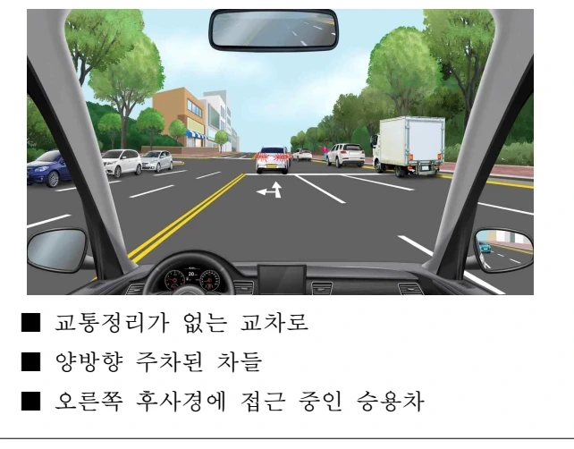

800. Зүүн эгнээ (1-р эгнээ)-гээр чигээрээ явж уулзварт ойртож байгаа нөхцөл байна. Аюулгүй жолоодох арга 2-ыг сонгоно уу.

- ①Эсрэг чиглэлд тээврийн хэрэгсэл байхгүй тул зүүн талаар гүйцэж түрүүлэн өнгөрнө.
- ②Хурдаа бууруулан 1-р эгнээнд байгаа такситай аюулгүйн зай баримтлан ойртоно.
- ③Дуут дохио хэрэглэн таксийг зогсоож, таксины баруун талаар хурдан өнгөрнө.
- ④Дараалан 3-р эгнээ рүү эгнээ сольж зогсоно.
- ⑤2-р эгнээ рүү эгнээ солих тохиолдолд такси болон явган зорчигчид ойртох үед хурдаа бууруулна.
Хариулт харах
Зөв хариулт
② Хурдаа бууруулан 1-р эгнээнд байгаа такситай аюулгүйн зай баримтлан ойртоно.
⑤ 2-р эгнээ рүү эгнээ солих тохиолдолд такси болон явган зорчигчид ойртох үед хурдаа бууруулна.
Үндэслэл
Нэгдүгээр эгнээгээр явж буй такси баруун гар талдаа явган зорчигч байгаа эсэхийг шалгаж, тоормослож, баруун тийш жолоодлогыг ажиллуулдаг. Иймд араас дагаж яваа жолооч нар таксины хурдыг гэнэт сааруулахаас болгоомжилж, аюулгүй зайг барих хэрэгтэй. Мөн баруун гар тал руугаа чиглэлээ солихдоо зорчигчдыг 2-р эгнээнд зогсоосныхоо дараа суулгаж, зогсоол дээр байгаа машинаас зайлсхийдэг тул хурдаа багасгаж, уулзвар руу ойртох хэрэгтэй.
Үндэслэлийн текст нь машин орчуулга.